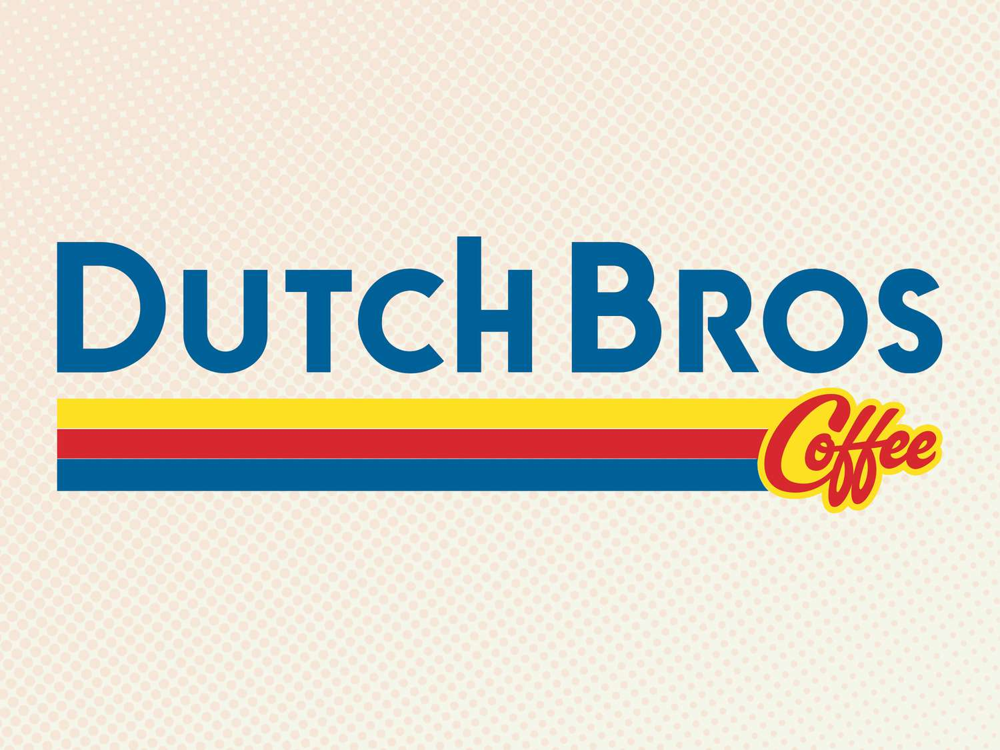

Popular Coffee Shops
Starbucks, Dunkin, and Dutch Bros are three popular coffee chains known for their distinct styles and loyal followings. Starbucks is recognized worldwide for its extensive menu of espresso drinks, seasonal specialties, and café-style atmosphere. Dunkin focuses on fast, affordable coffee and baked goods, offering simple, consistent options for people on the go. Dutch Bros stands out with its energetic, drive-thru-focused service and creative, flavor-packed drinks that appeal to a younger, fun-loving crowd. Together, they represent the diverse ways people enjoy coffee across the U.S.


